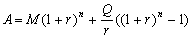

按揭計算(II)
程式編寫日期: 2006年8月22日
程式用作計算按揭問題，假定利息每月計算及息率固定不變，程式可以計算以下問題:
˙尚欠貸款Outstanding balance ( 已知貸款、每月供款、貸款及年利率)
˙貸款 Loan (已知尚欠貸款、每月供款、年利率及還款期數)
˙年利率 (已知尚欠貸款、每月供款、貸款 及還款期數)
˙還款期數 (已知尚欠貸款、每月供款、貸款及年利率)
˙每月供款Monthly instalments (已知貸款、年利率及還款期數(月為單位))
注意: 10x是按shift log。
程式 (219 bytes)
Mem clear: π→A: ?→A: ?→B: ?→C: ?→D: ?→X: 1200→M:
1 + C ÷ M→Y: A=π => BY^D - XMC-1(Y^D - 1◢
B=0 => (A + XMC-1(Y^D - 1) ) ÷ Y^D◢
X=0 => C(BY^D - A) ÷ M(Y^D - 1◢
C => log ( ( AC - XM) ÷ (BC - XM) ) ÷ log Y◢
6→Y: Lbl 0: Y→C: 1 + Y ÷ M:
Y - M( BAns^D - XMY-1(Ans^D - 1) -A ) ÷ ( XM2(Ans^D - 1)
÷ Y2 +Ans-1Ans^D( DB- DXM ÷ Y→Y:
(Y - C)2 ≧ 10x - 6 => Goto 0: Y
參考公式:

(A為尚欠貨款，Q為每月供款，M為貨款及 r 為每月利率 (即年利率÷12))
例題1: 貸款$100,0000，年利率為6%，每月還款額5995.51，求還款100期後的尚欠貸款。
按 Prog 1 再按 EXE (不輸入數值代表計算尚欠貨款)
100 0000 EXE (貸款)
6 EXE (年利率)
100 EXE (還款期)
5995.51 EXE (每月還款，顯示尚欠貸款為 $871247.01)
計算完結按AC終止程式
例題2: 貸款$100,0000，年利率為6%，貸款時間為360月，求每月還款額。
按 Prog 1 再按 0 EXE (尚欠貸款為0代表完全清還)
100 0000 EXE (貸款)
6 EXE (年利率)
360 EXE (還款期)
EXE (不輸入數值代表計算每月還款額，顯示還款額為 $5995.51)
計算完結按AC終止程式
例題3: 一項貸款，每月還款額為$5995.51，年利率為6%，還款期數為360月求貸款額。
按 Prog 1 再按 0 EXE (尚欠貸款為0代表完全清還)
EXE (不輸入數值代表計算貸款)
6 EXE (年利率)
360EXE (還款期)，顯示貸款額為 $100 0000)
5995.51 EXE (每月還款額，顯示貸款額為 $100 0000)
計算完結按AC終止程式
例題4: 貸款$100,0000，年利率為6%，每月還款額為$5995.51，求還款期數。
按 Prog 1 再按 0 EXE (尚欠貸款為0代表完全清還)
100 0000 EXE (貸款)
6 EXE (年利率)
EXE (不輸入數值代表計算還款期 )
5995.51 EXE (每月還款額 ，顯示還款期為360月)
計算完結按AC終止程式
例題5: 一項貸款，每月還款額為$5995.51，貸款$100,0000，還款100期後的尚欠貸款為$871247.01，求年利率。
按 Prog 1 再按 871247.01 EXE (尚欠貸款)
100 0000 EXE (貸款)
EXE (不輸入數值代表計算年利率)
100 EXE (還款期)
5995.51 EXE (每月還款額，顯示年利率為 6%)
計算完結按AC終止程式
註: 計算利率時，由於需要重複計算，所以計算時間可能會較長。
Mem clear: π→A: ?→A: ?→B: ?→C: ?→D: ?→X: 1200→Y:
1 + C ÷ Y→M: A=π => BM^D - XYC-1(M^D - 1◢
B=0 => (A + XYC-1(M^D - 1) ) ÷ M^D◢
X=0 => C(BM^D - A) ÷ Y(M^D - 1◢
D=0 => log ( ( ACY-1 - X) ÷ (BCY-1 - X) ) ÷ log M◢
6M+: Lbl 0: M→C: 1 + M÷Y:
Y( BAns^D - XYM-1(Ans^D - 1) -A ) ÷ ( XY2(Ans^D - 1) ÷ M2 +Ans-1Ans^D( DB- DXY÷MM-:
(M - C)2 ≧ 10x - 6 => Goto 0: M